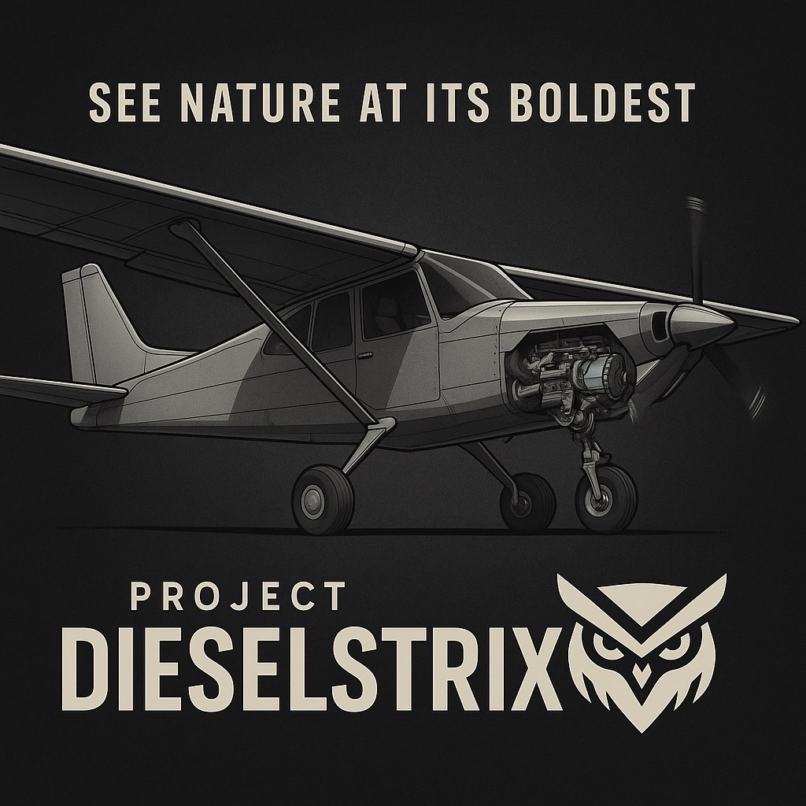

See Nature at Its Boldest
DieselStrix is pushing the edge of experimental aviation, combining the rugged performance of a Cummins R2.8 diesel with the proven utility of a STOL-ready platform inspired by the Zenith CH-750 Super Duty. Built bold, flown bolder.
We're integrating diesel torque into the sky. The project features a Cummins R2.8 turbo diesel engine, custom mounting, and precision craftsmanship — all designed to break barriers in backcountry flight.
Want to support DieselStrix? Help us build the future of diesel-powered aviation.
Support on Patreon Merch